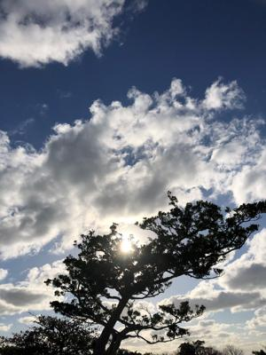
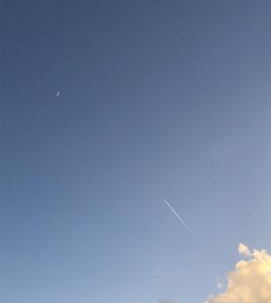

うるがいの話 ある日
最新: ひこうき雲【うるがいの話 ある日】とは 一日だけのプログです
『うるがいの話』の最新一日だけのプログで、通信料が少なく経済的だ。カニの画像をクリックすると全ての日付が載る『うるがいの話』サイトを表示します
|
|
【うるがいの話】 うるがい(ｳﾙｶﾞｲ urugai)とは、『もずくがに』の名前でとても大きくなります。 |
|---|---|
|
|
【カミマヤーの話】 猫のことを方言でマヤーといいます。カミマヤーとは、神の猫のことです。 |
|
【タナガーの話】 たながー（ﾀﾅｶﾞｰtanagaa）とは手長えびのことで、何種類かあり大きいのは車 エビぐらいになります。 |

|
【ぶながぁの話】 ぶながー(bunagaa)とは、赤い髪の毛、赤い身体、そして身長は１ｍ２０ｃｍ ぐらい、川の蟹を食べているの目撃された。場所は沖縄県国頭郡大宜味村のと ある村僕の隣近所に住んでいる爺さんから、聞いた話です。 |
|
|
【ギーマの話】 ギーマ(giima)とは、山原の里山に咲くスズランに似た、 花を付けます。実は食べられます、 気が付くと口の周りが紫になっています。 |
2021年12月20日 (月）ひこうき雲
21:08

『ひこうき雲』 の曲は「禅の言葉とジブリ（徳間書店）」龍雲寺住職・細川
晋輔の本によると、ユーミンがこの歌は『不治の病によって高校一年生でなく
なった、小学校の同級生の男の子がきっかけで作られた』と書いてあった。
その後、『そうだったのか！コード理論 コードはパズルだ!!田熊健/編著』で
楽譜（コード付き）が載っていたのでいつかは楽譜ソフトに登録してみるかと
考えていた。そして三線の本を捜していると、『三線スタジオジブリ』に『ひ
こうき雲』が載っていることが分かった（借りてみたら本でなくＣＤだったが
）。ということが重なり、コード理論の楽譜を参考に楽譜ソフトに登録してみ
た。ぜんぜん、ぜんぜん、パットせず気に入らない、そこでユーチューブとネ
ットを頼りに足かけ三日！かかって完成した。ＣＤの音源より、多分ここがい
いと思う。なぜ、楽譜ソフトを利用するのかというと、テンポが調整できるの
が大きい、オリジナルのテンポでは、とてもとても今の実力では三線で弾くこ
とは不可能である。この曲は５トラック（三線、ピアノの高い音と低い音、ギ
ターのコード弾き、そしてミュートしているがピアノの楽譜（三線の元ネタ）
）で構成している。これらの音と一緒に合奏すると、最高！、だから。で、燃
え尽きてしまった、当分は楽譜ソフトの戯れるのは辞めて専門書に向き合う事
にする。

『ひこうき雲（ユーチューブ）』 ３分７秒 三線演奏